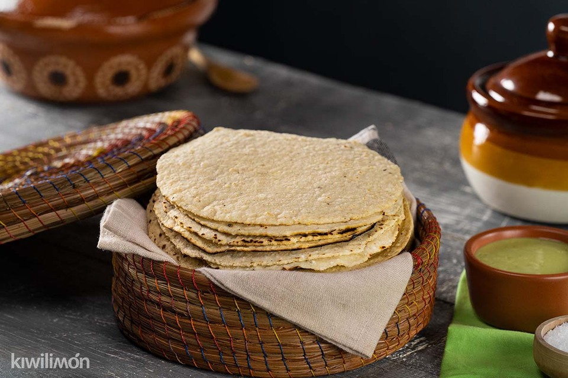
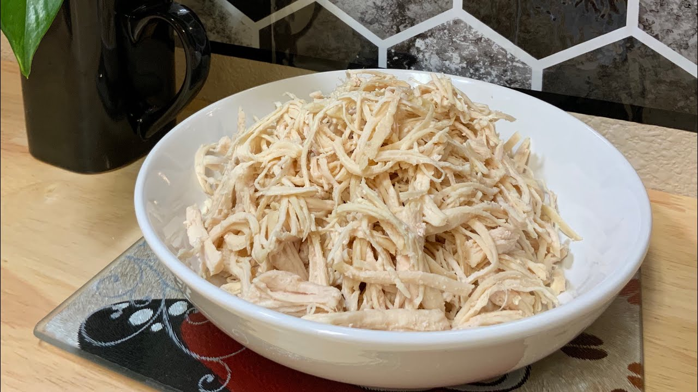
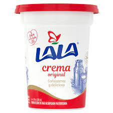
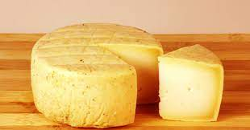
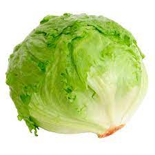
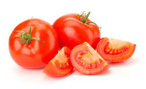
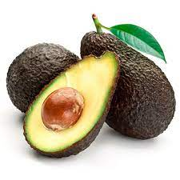
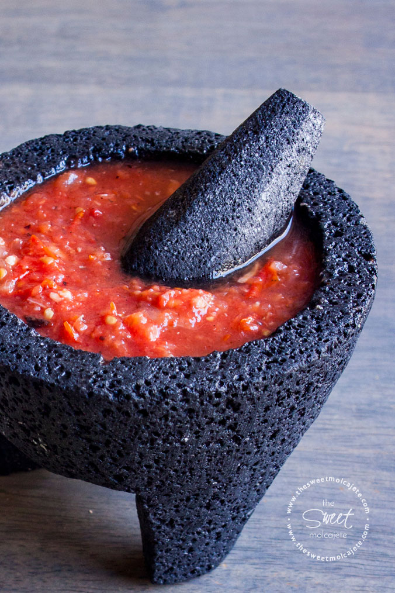
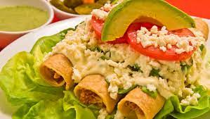

COCINA MEXICANA
con Nicole
TACOS DORADOS:
¿Sabías que los tacos dorados son originarios de Sinaloa? Moctezuma, quien utilizaba de cuchara las tortillas hechas en piedras calientes, formando algo parecido al taco que conocemos hoy en día y la segunda es la forma como enviaban la comida a los hombres que trabajaban todo el día en el campo, envuelta en tortillas.Y es por ello por lo que se da el origen del taco dorado, taco de oro o bien taco crujiente.
INGREDIENTES:
- Tortillas

- Relleno de taco a elección (puede ser pollo, papas, carne deshebrada, etc)

- Crema

- Queso

- Lechuga

- Jitomate

- Aguacate

- Salsa roja

PASOS:
- En la tortilla se agrega el relleno y se enrolla.
- Se le va colocando un palillo para que no se desaga.
- Se coloca aceite en una olla poco profunda.
- Ya que calentó la olla empezamos a echar los tacos.
- Cuando tornen un color dorado, los retiramos.
- Colocamos en un plato los tacos y los acompañamos según nuestro gusto.
- Comer nuestros ricos tacos dorados.
